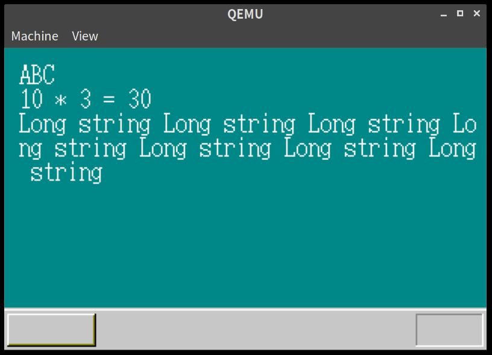
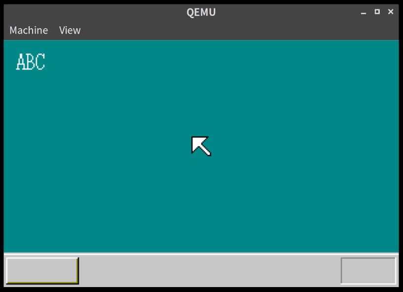

「30日でできる！OS自作入門」をRustで。5日目
「30日でできる！OS自作入門 」のC言語の部分をできるだけRustですすめてみる。今回は5日目の内容。 記事をまとめるため、OS自作入門 タグを作った
定数をasmheadから読み込む。
前回定義した画面サイズなどは実はasmhead.asm内で定義されていた。本の内容上はasmhead.asm内の定義から定数関係の情報をひいてくるとともに、Cのstructの導入をしている。Rust実装もそれに従う。
本文中ではbootinfoとしてブート時の情報をまとめているが、実装のまとめ方を変えて、vga.rsの中に画面情報だけまとめたScreenというstructを作ることにする。まだ書籍の後のほうまで見たわけではないので、これで不都合がでるかもしれないが、その時はまた修正することにする。
// vga.rs
#[derive(Debug)]
pub struct Screen {
pub scrnx: i16,
pub scrny: i16,
pub vram: &'static mut u8,
}
impl Screen {
// asmhead.asmの定義よりhttps://github.com/rust-lang/rfcs/blob/master/text/2000-const-generics.md
// SCRNX EQU 0x0ff4
// SCRNY EQU 0x0ff6
// VRAM EQU 0x0ff8
pub fn new() -> Screen {
Screen {
scrnx: unsafe { *(0x0ff4 as *const i16) },
scrny: unsafe { *(0x0ff6 as *const i16) },
vram: unsafe { &mut *( *(0xff8 as *const i32) as *mut u8) },
}
}
pub fn init() {
init_pallet();
init_screen();
}
pub fn init_palette() {
let eflags = asm::load_eflags();
asm::cli();
asm::out8(0x03c8, 0);
for i in 0..16 {
// 書き込むときは上位2ビットを0にしないといけない。See: http://oswiki.osask.jp/?VGA#o2d4bfd3
asm::out8(0x03c9, COLOR_PALETTE[i][0] / 4);
asm::out8(0x03c9, COLOR_PALETTE[i][1] / 4);
asm::out8(0x03c9, COLOR_PALETTE[i][2] / 4);
}
asm::store_eflags(eflags);
}
pub fn init_screen(&mut self) {
use Color::*;
let xsize = self.scrnx as isize;
let ysize = self.scrny as isize;
self.boxfill8(DarkCyan, 0, 0, xsize - 1, ysize - 29);
self.boxfill8(LightGray, 0, ysize - 28, xsize - 1, ysize - 28);
self.boxfill8(White, 0, ysize - 27, xsize - 1, ysize - 27);
self.boxfill8(LightGray, 0, ysize - 26, xsize - 1, ysize - 1);
self.boxfill8(White, 3, ysize - 24, 59, ysize - 24);
self.boxfill8(White, 2, ysize - 24, 2, ysize - 4);
self.boxfill8(DarkYellow, 3, ysize - 4, 59, ysize - 4);
self.boxfill8(DarkYellow, 59, ysize - 23, 59, ysize - 5);
self.boxfill8(Black, 2, ysize - 3, 59, ysize - 3);
self.boxfill8(Black, 60, ysize - 24, 60, ysize - 3);
self.boxfill8(DarkGray, xsize - 47, ysize - 24, xsize - 4, ysize - 24);
self.boxfill8(DarkGray, xsize - 47, ysize - 23, xsize - 47, ysize - 4);
self.boxfill8(White, xsize - 47, ysize - 3, xsize - 4, ysize - 3);
self.boxfill8(White, xsize - 3, ysize - 24, xsize - 3, ysize - 3);
}
// boxfill8もScreenのメソッドとして定義する
pub fn boxfill8(&mut self, color: Color, x0: isize, y0: isize, x1: isize, y1: isize) {
for y in y0..=y1 {
for x in x0..=x1 {
let ptr = unsafe { &mut *((self.vram as *mut u8).offset(y * self.scrnx as isize + x)) };
*ptr = color as u8;
}
}
}
}これで、lib.rs側はscreen.init()を呼ぶだけでよくなった。
#[no_mangle]
#[start]
pub extern "C" fn haribote_os() -> ! {
let mut screen = Screen::new();
screen.init();
loop {
hlt()
}
}実行結果は前回の最後と変わらないので省略する。
フォントを導入する
本ではフォント情報のtxtファイルからobjファイルに展開するような独自プログラムが用意されている。
しかし、Linux環境で動くものではなく、処理を全てそろえるのも面倒なため、txtファイルをゴニョゴニョとしてrsファイルにした。
// fonts.rs
pub const FONT_WIDTH: usize = 8;
pub const FONT_HEIGHT: usize = 16;
type Font = [[bool; FONT_WIDTH]; FONT_HEIGHT];
pub const FONTS: [Font; 255] = [
// 略...
// 0x41 (A)
[
[false, false, false, false, false, false, false, false],
[false, false, false, true, true, false, false, false],
[false, false, false, true, true, false, false, false],
[false, false, false, true, true, false, false, false],
[false, false, false, true, true, false, false, false],
[false, false, true, false, false, true, false, false],
[false, false, true, false, false, true, false, false],
[false, false, true, false, false, true, false, false],
[false, false, true, false, false, true, false, false],
[false, true, true, true, true, true, true, false],
[false, true, false, false, false, false, true, false],
[false, true, false, false, false, false, true, false],
[false, true, false, false, false, false, true, false],
[true, true, true, false, false, true, true, true],
[false, false, false, false, false, false, false, false],
[false, false, false, false, false, false, false, false],
],
// ....
];上記のように、Rust上でboolの配列になるように変換した。
このfonts.rsのデータを使ってフォントをレンダリングできるように print_char 関数を用意する。
//vga.rs
impl Screen {
// 略
pub fn print_char(&mut self, char: u8, color: Color, startx: isize, starty: isize) {
let font = FONTS[char as usize];
let color = color as u8;
let offset = startx + starty * self.scrnx as isize;
for y in 0..FONT_HEIGHT {
for x in 0..FONT_WIDTH {
if font[y][x] {
let cell = (y * self.scrnx as usize + x) as isize;
let ptr = unsafe { &mut *((self.vram as *mut u8).offset(cell + offset)) };
*ptr = color;
}
}
}
}
}また、Rustの write! マクロを使って、簡単に変数もフォーマットして出力できるように core::fmt::Write を実装する型を作る。折角なので、改行にも対応した。
pub struct ScreenWriter {
initial_x: usize,
x: usize,
y: usize,
color: Color,
screen: Screen,
}
impl ScreenWriter {
pub fn new(screen: Screen, color: Color, x: usize, y: usize) -> ScreenWriter {
ScreenWriter {
initial_x: x,
x,
y,
color,
screen,
}
}
fn newline(&mut self) {
self.x = self.initial_x;
self.y = self.y + FONT_HEIGHT;
}
}
impl fmt::Write for ScreenWriter {
fn write_str(&mut self, s: &str) -> fmt::Result {
let str_bytes = s.as_bytes();
let height = self.screen.scrny as usize;
let width = self.screen.scrnx as usize;
for i in 0..str_bytes.len() {
if str_bytes[i] == b'\n' {
self.newline();
return Ok(());
}
if self.x + FONT_WIDTH < width && self.y + FONT_HEIGHT < height {
self.screen
.print_char(str_bytes[i], self.color, self.x as isize, self.y as isize);
} else if self.y + FONT_HEIGHT * 2 < height {
// 1行ずらせば入る場合は1行ずらしてから表示
self.newline();
self.screen
.print_char(str_bytes[i], self.color, self.x as isize, self.y as isize);
}
// 次の文字用の位置に移動
if self.x + FONT_WIDTH < width {
self.x = self.x + FONT_WIDTH;
} else if self.y + FONT_HEIGHT < height {
self.newline();
} else {
self.x = width;
self.y = height;
}
}
Ok(())
}
}これを使って、haribote_os 関数内で
let mut writer = ScreenWriter::new(screen, vga::Color::White, 10, 10);
use core::fmt::Write;
write!(writer, "ABC\nabc\n").unwrap();
write!(writer, "10 * 3 = {}\n", 10 * 3).unwrap();
write!(
writer,
"Long string Long string Long string Long string Long string Long string Long string"
)
.unwrap();;のようにすると、下のように文字がレンダリングできたことがわかる。

マウスポインタのレンダリング
マウスポインタのレンダリングもScreenのメソッドとして実装する。
// vga.rs
#[derive(Debug)]
pub struct Screen {
pub scrnx: i16,
pub scrny: i16,
pub vram: &'static mut u8,
pub mouse: [[Color; MOUSE_CURSOR_WIDTH]; MOUSE_CURSOR_HEIGHT], // <- 追加
}
impl Screen {
// ...
pub fn init(&mut self) {
self.init_palette();
self.init_screen();
self.init_mouse_cursor(); // <- 追加
self.putblock( // <- 追加
self.mouse,
MOUSE_CURSOR_WIDTH as isize,
MOUSE_CURSOR_HEIGHT as isize,
(self.scrnx as isize - MOUSE_CURSOR_WIDTH as isize) / 2,
(self.scrny as isize - MOUSE_CURSOR_HEIGHT as isize - 28) / 2,
);
}
fn init_mouse_cursor(&mut self) {
let cursor: [[u8; MOUSE_CURSOR_WIDTH]; MOUSE_CURSOR_HEIGHT] = [
*b"**************..",
*b"*OOOOOOOOOOO*...",
*b"*OOOOOOOOOO*....",
*b"*OOOOOOOOO*.....",
*b"*OOOOOOOO*......",
*b"*OOOOOOO*.......",
*b"*OOOOOOO*.......",
*b"*OOOOOOOO*......",
*b"*OOOO**OOO*.....",
*b"*OOO*..*OOO*....",
*b"*OO*....*OOO*...",
*b"*O*......*OOO*..",
*b"**........*OOO*.",
*b"*..........*OOO*",
*b"............*OO*",
*b".............***",
];
for y in 0..MOUSE_CURSOR_HEIGHT {
for x in 0..MOUSE_CURSOR_WIDTH {
match cursor[y][x] {
b'*' => self.mouse[y][x] = Color::Black,
b'O' => self.mouse[y][x] = Color::White,
_ => (), // 背景は初期化時に背景色をいれている。後の章で透過にも対応するのだろうか。。？
}
}
}
}
// 本では画像としてレンダリングできるサイズ可変になっているが、Rustでのとりまわしが面倒だったので一旦16固定にしている。
// Const Generics(https://github.com/rust-lang/rfcs/blob/master/text/2000-const-generics.md)が使えれば解決しそうな気がするが、あまり理解できていない。
fn putblock(
&mut self,
image: [[Color; 16]; 16],
pxsize: isize,
pysize: isize,
px0: isize,
py0: isize,
) {
for y in 0..pysize {
for x in 0..pxsize {
let ptr = unsafe {
&mut *((self.vram as *mut u8)
.offset((py0 + y) * (self.scrnx as isize) + (px0 + x)))
};
*ptr = image[y as usize][x as usize] as u8;
}
}
}
}実行してみると、以下のようにマウスカーソルが画面の中程にでてきたことがわかる。

5日目は以上となる。厳密にはGDT, IDTの初期化が残っているが、これは成果が見えづらいため、6日目にまわすことにする。